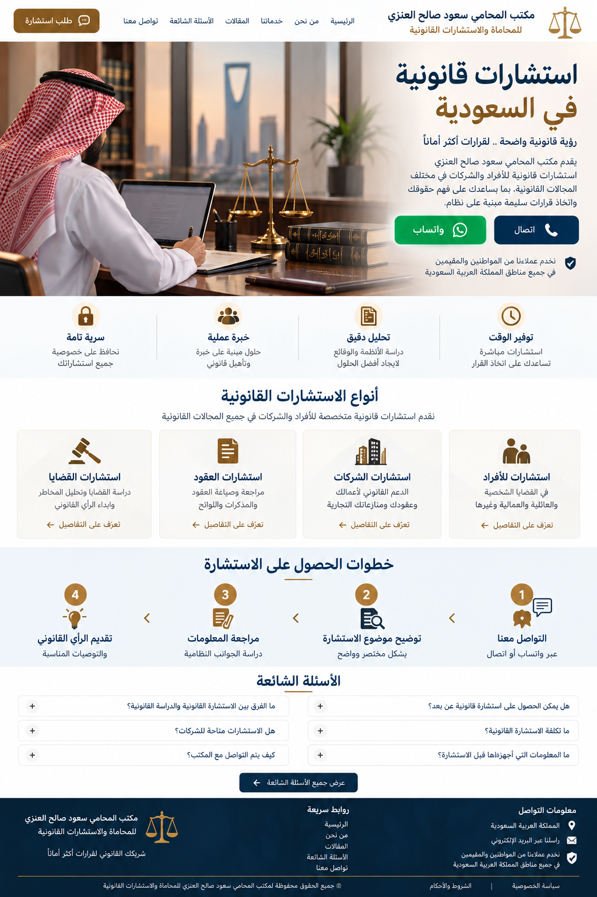

استشارات قانونية في السعودية
يقدم مكتب المحامي سعود صالح العنزي للمحاماة والاستشارات القانونية استشارات قانونية للأفراد والشركات في مختلف المجالات القانونية، مع دراسة الوقائع والمستندات وتوضيح الخيارات القانونية المناسبة.
أنواع الاستشارات القانونية
تشمل الخدمات استشارات الأفراد والشركات والعقود والقضايا والمنازعات، إضافة إلى القضايا الجنائية والعمالية والعقارية والتجارية والأحوال الشخصية والقضايا الإدارية.
خطوات الحصول على الاستشارة
يبدأ التواصل عبر واتساب أو الاتصال، ثم توضيح موضوع الاستشارة ومراجعة المعلومات والمستندات وتقديم الرأي القانوني المناسب.
الأسئلة الشائعة
يمكن التواصل مع المكتب من مختلف مناطق المملكة العربية السعودية لتحديد طبيعة الموضوع والخدمة القانونية المناسبة.